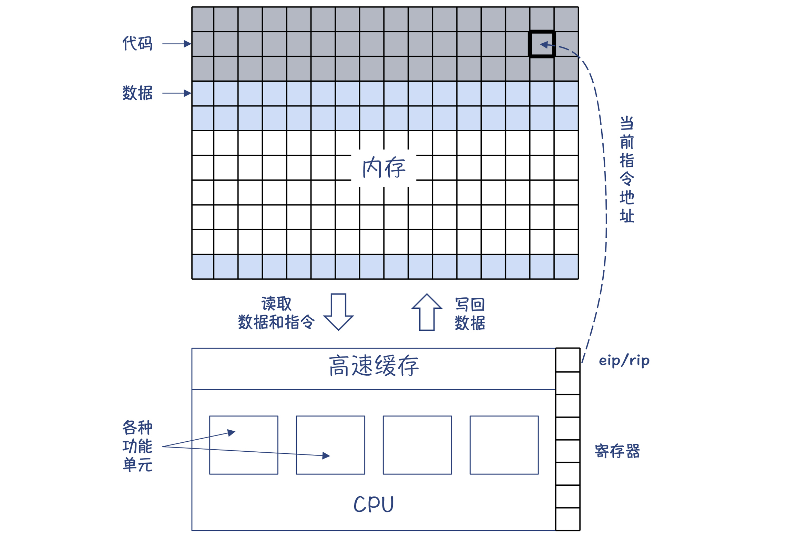
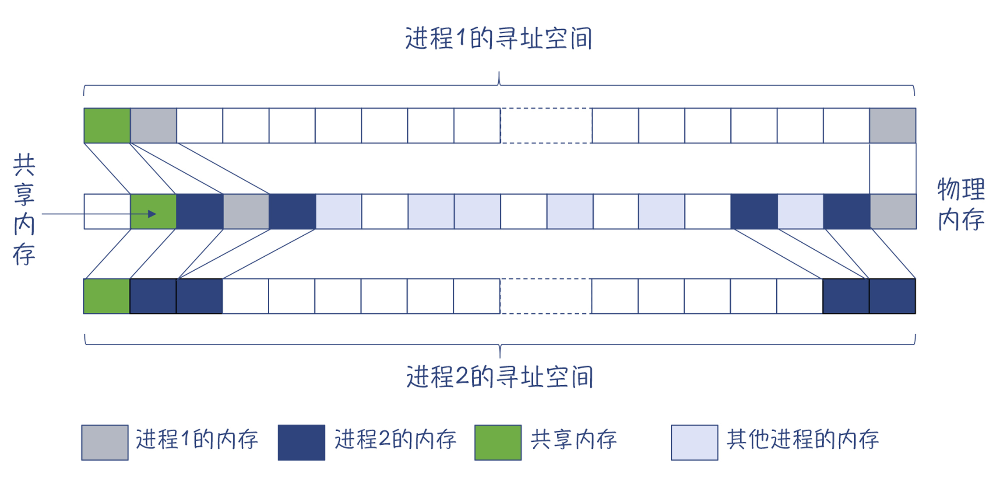
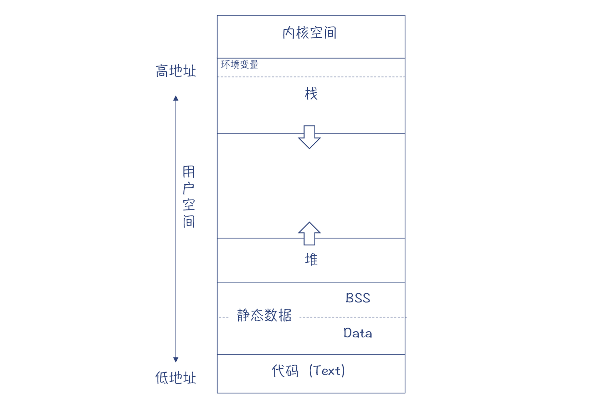
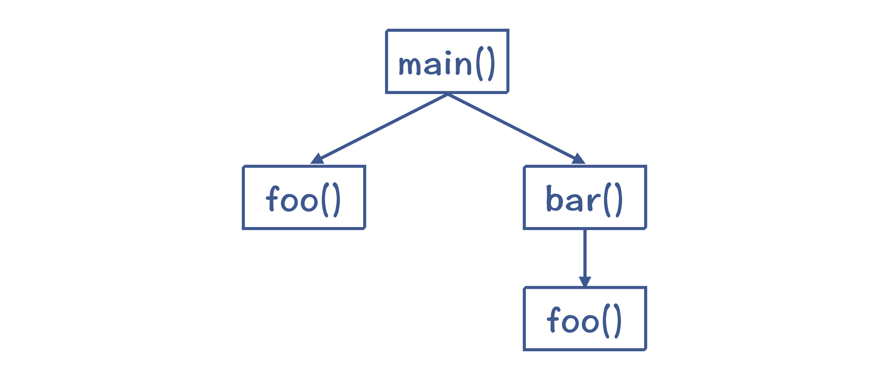
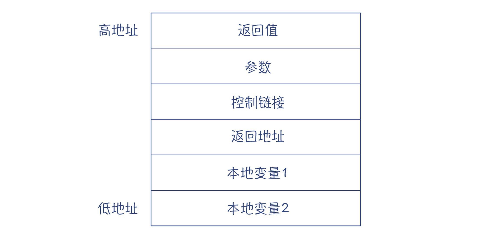
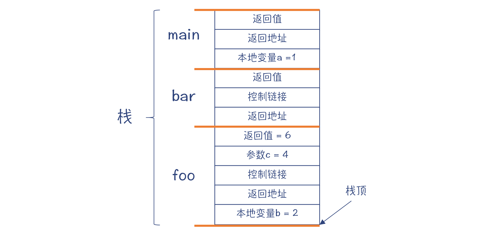
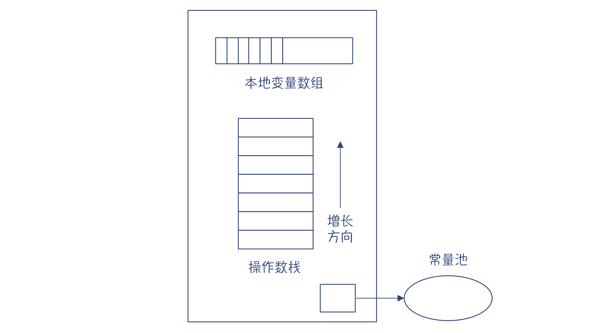
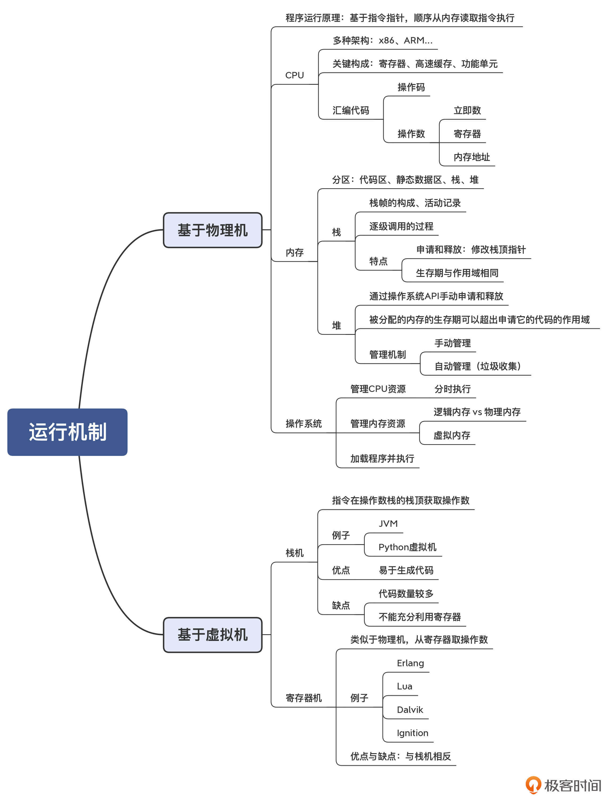

- 00 学习指南 如何学习这门编译原理实战课？.md.html
- 00 开篇词 在真实世界的编译器中游历.md.html
- 01 编译的全过程都悄悄做了哪些事情？.md.html
- 02 词法分析：用两种方式构造有限自动机.md.html
- 03 语法分析：两个基本功和两种算法思路.md.html
- 04 语义分析：让程序符合语义规则.md.html
- 05 运行时机制：程序如何运行，你有发言权.md.html
- 06 中间代码：不是只有一副面孔.md.html
- 07 代码优化：跟编译器做朋友，让你的代码飞起来.md.html
- 08 代码生成：如何实现机器相关的优化？.md.html
- 09 Java编译器（一）：手写的编译器有什么优势？.md.html
- 10 Java编译器（二）：语法分析之后，还要做些什么？.md.html
- 11 Java编译器（三）：属性分析和数据流分析.md.html
- 12 Java编译器（四）：去除语法糖和生成字节码.md.html
- 13 Java JIT编译器（一）：动手修改Graal编译器.md.html
- 14 Java JIT编译器（二）：Sea of Nodes为何如此强大？.md.html
- 15 Java JIT编译器（三）：探究内联和逃逸分析的算法原理.md.html
- 16 Java JIT编译器（四）：Graal的后端是如何工作的？.md.html
- 17 Python编译器（一）：如何用工具生成编译器？.md.html
- 18 Python编译器（二）：从AST到字节码.md.html
- 19 Python编译器（三）：运行时机制.md.html
- 20 JavaScript编译器（一）：V8的解析和编译过程.md.html
- 21 JavaScript编译器（二）：V8的解释器和优化编译器.md.html
- 22 Julia编译器（一）：如何让动态语言性能很高？.md.html
- 23 Julia编译器（二）：如何利用LLVM的优化和后端功能？.md.html
- 24 Go语言编译器：把它当作教科书吧.md.html
- 25 MySQL编译器（一）：解析一条SQL语句的执行过程.md.html
- 26 MySQL编译器（二）：编译技术如何帮你提升数据库性能？.md.html
- 27 课前导读：学习现代语言设计的正确姿势.md.html
- 28 前端总结：语言设计也有人机工程学.md.html
- 29 中端总结：不遗余力地进行代码优化.md.html
- 30 后端总结：充分发挥硬件的能力.md.html
- 31 运行时（一）：从0到语言级的虚拟化.md.html
- 32 运行时（二）：垃圾收集与语言的特性有关吗？.md.html
- 33 并发中的编译技术（一）：如何从语言层面支持线程？.md.html
- 34 并发中的编译技术（二）：如何从语言层面支持协程？.md.html
- 35 并发中的编译技术（三）：Erlang语言厉害在哪里？.md.html
- 36 高级特性（一）：揭秘元编程的实现机制.md.html
- 37 高级特性（二）：揭秘泛型编程的实现机制.md.html
- 38 综合实现（一）：如何实现面向对象编程？.md.html
- 39 综合实现（二）：如何实现函数式编程？.md.html
- 40 成果检验：方舟编译器的优势在哪里？.md.html
- 不定期加餐1 远程办公，需要你我具备什么样的素质？.md.html
- 不定期加餐2 学习技术的过程，其实是训练心理素质的过程.md.html
- 不定期加餐3 这几年，打动我的两本好书.md.html
- 不定期加餐4 从身边的牛人身上，我学到的一些优秀品质.md.html
- 不定期加餐5 借助实例，探究C++编译器的内部机制.md.html
- 划重点 7种编译器的核心概念与算法.md.html
- 期末答疑与总结 再次审视学习编译原理的作用.md.html
- 热点问题答疑 如何吃透7种真实的编译器？.md.html
- 用户故事 易昊：程序员不止有Bug和加班，还有诗和远方.md.html
- 知识地图 一起来复习编译技术核心概念与算法.md.html
- 结束语 实战是唯一标准！.md.html
- 捐赠
05 运行时机制：程序如何运行，你有发言权
你好，我是宫文学。在语义分析之后，编译过程就开始进入中后端了。
经过前端阶段的处理分析，编译器已经充分理解了源代码的含义，准备好把前端处理的结果（带有标注信息的AST、符号表）翻译成目标代码了。
我在第1讲也说过，如果想做好翻译工作，编译器必须理解目标代码。而要理解目标代码，它就必须要理解目标代码是如何被执行的。通常情况下，程序有两种执行模式。
第一种执行模式是在物理机上运行。针对的是C、C++、Go这样的语言，编译器直接将源代码编译成汇编代码（或直接生成机器码），然后生成能够在操作系统上运行的可执行程序。为了实现它们的后端，编译器需要理解程序在底层的运行环境，包括CPU、内存、操作系统跟程序的互动关系，并要能理解汇编代码。
第二种执行模式是在虚拟机上运行。针对的是Java、Python、Erlang和Lua等语言，它们能够在虚拟机上解释执行。这时候，编译器要理解该语言的虚拟机的运行机制，并生成能够被执行的IR。
理解了这两种执行模式的特点，我们也就能弄清楚用高级语言编写的程序是如何运行的，进而也就理解了编译器在中后端的任务是什么。接下来，我们就从最基础的物理机模式开始学习吧。
在物理机上运行
在计算机发展的早期，科学家们确立了计算机的结构，并一直延续至今，这种结构就是冯·诺依曼结构。它的主要特点是：数据和指令不加区别，混合存储在同一个存储器中（即主存，或叫做内存）；用一个指令指针指向内存中指令的位置，CPU就能自动加载这个位置的指令并执行。
在x86架构下，这个指针是eip寄存器（32位模式）或rip寄存器（64位模式）。一条指令执行完毕，指令指针自动增加，并执行下一条指令。如果遇到跳转指令，则跳转到另一个地址去执行。

图1：计算机的运行机制
这其实就是计算机最基本的运行原理。这样，你就可以在大脑中建立起像图1那样的直观结构。
通过图1，你会看到，计算机指令的执行基本上只跟两个硬件相关：一个是CPU，一个是内存。
CPU
CPU是计算机的核心。从硬件构成方面，我们需要知道它的三个信息：
- 第一，CPU上面有寄存器，并且可以直接由指令访问。寄存器的读写速度非常快，大约是内存的100倍。所以我们编译后的代码，要尽量充分利用寄存器，而不是频繁地去访问内存。
- 第二，CPU有高速缓存，并且可能是多级的。高速缓存也比内存快。CPU在读取指令和数据的时候，不是一次读取一条，而是读取相邻的一批数据，放到高速缓存里。接下来要读取的数据，很可能已经在高速缓存里了，通过这种机制来提高运行性能。因此，编译器要尽量提高缓存的命中率。
- 第三，CPU内部有多个功能单元，有的负责计算，有的负责解码，等等。所以，一个指令可以被切分成多个执行阶段，每个阶段在不同的功能单元上运行，这为实现指令级并行提供了硬件基础。在第8讲，我还会和你详细解释这个话题。
好了，掌握了这个知识点，我们可以继续往下学习了。我们说，CPU是运行指令的地方，那指令到底是什么样子的呢？
我们知道，CPU有多种不同的架构，比如x86架构、ARM架构等。不同架构的CPU，它的指令是不一样的。不过它们的共性之处在于，指令都是01这样的机器码。为了便于理解，我们通常会用汇编代码来表示机器指令。比如，b=a+2指令对应的汇编码可能是这样的：
movl -4(%rbp), %eax #把%rbp-4内存地址的值拷贝到%eax寄存器
addl $2, %eax #把2加到%eax寄存器
movl %eax, -8(%rbp) #把%eax寄存器的值保存回内存，地址是%rbp-8
上面的汇编代码采用的是GNU汇编器规定的格式。每条指令都包含了两部分：操作码（opcode）和操作数（oprand）。
图2：汇编代码示例
操作码是让CPU执行的动作。这段示例代码中，movl、addl是助记符（Assembly Mnemonic），其中的mov和add是指令，l是后缀，表示操作数的位数。
而操作数是指令的操作对象，它可以是常数、寄存器和某个内存地址。图2示例的汇编代码中，“$2”就是个常数，在指令里我们把它叫做立即数；而“%eax”是访问一个寄存器，其中eax是寄存器的名称；而带有括号的“-4(%rbp)”，则是对内存的访问方式，这个内存的地址是在rbp寄存器的值的基础上减去4。
如果你还想对指令、汇编代码有更多的了解，可以再去查阅些资料学习，比如去参考下我的《编译原理之美》中的第22、23、31这几讲。
这里要提一下，虽然程序觉得自己一直在使用CPU，但实际上，背后有操作系统在做调度。操作系统是管理系统资源的，而CPU是计算机的核心资源，操作系统会把CPU的时间划分成多个时间片，分配给不同的程序使用，每个程序实际上都是在“断断续续”地使用CPU，这就是操作系统的分时调度机制。在后面课程里讨论并发的时候，我们会更加深入地探讨这个机制。
内存
好了，接下来我说说执行指令相关的另一个硬件：内存。
程序在运行时，操作系统会给它分配一块虚拟的内存空间，让它可以在运行期内使用。内存中的每个位置都有一个地址，地址的长度决定了能够表示多大空间，这叫做寻址空间。我们目前使用的都是64位的机器，理论上，你可以用一个64位的长整型来表示内存地址。
不过，由于我们根本用不了这么大的内存，所以AMD64架构的寻址空间只使用了48位。但这也有256TB，远远超出了一般情况下的需求。所以，像Windows这样的操作系统还会给予进一步的限制，缩小程序的寻址空间。
图3：48位寻址空间有多大
但即使是在加了限制的情况下，程序在逻辑上可使用的内存一般也会大于实际的物理内存。不过进程不会一下子使用那么多的内存，只有在向操作系统申请内存的时候，操作系统才会把一块物理内存，映射成进程寻址空间内的一块内存。对应到图4中，中间一条是物理内存，上下两条是两个进程的寻址空间，它们要比物理内存大。
对于有些物理内存的内容，还可以映射进多个进程的地址空间，以减少内存的使用。比如说，如果进程1和进程2运行的是同一个可执行文件，那么程序的代码段是可以在两个进程之间共享的。你在图中可以看到这种情况。

图4：物理内存和逻辑内存的关系
另外，对于已经分配给进程的内存，如果进程很长时间不用，操作系统会把它写到磁盘上，以便腾出更多可用的物理内存。在需要的时候，再把这块空间的数据从磁盘中读回来。这就是操作系统的虚拟内存机制。
当然，也存在没有操作系统的情况，这个时候你的程序所使用的内存就是物理内存，我们必须自己做好内存的管理。
那么从程序角度来说，我们应该怎样使用内存呢？
本质上来说，你想怎么用就怎么用，并没有什么特别的限制。一个编译器的作者，可以决定在哪儿放代码，在哪儿放数据。当然了，别的作者也可能采用其他的策略。比如，C语言和Java虚拟机对内存的管理和使用策略就是不同的。
不过尽管如此，大多数语言还是会采用一些通用的内存管理模式。以C语言为例，会把内存划分为代码区、静态数据区、栈和堆，如下所示。

图5：C语言的内存布局方式
其中，代码区（也叫做文本段），主要存放编译完成后的机器码，也就是CPU指令；静态数据区会保存程序中的全局变量和常量。这些内存是静态的、固定大小的，在编译完毕以后就能确定清楚所占用空间的大小、代码区每个函数的地址，以及静态数据区每个变量和常量的地址。这些内存在程序运行期间会一直被占用。
而堆和栈，属于程序动态、按需获取的内存。我来和你分析下这两种内存。
我们先看看栈（Stack）。使用栈的一个好处是，操作系统会根据程序使用内存的需求，自动地增加或减少栈的空间。通常来说，操作系统会用一个寄存器保存栈顶的地址，程序可以修改这个寄存器的值，来获取或者释放空间。有的CPU，还有专门的指令来管理栈，比如x86架构，会使用push和pop指令，把数据写入栈或弹出栈，并自动修改栈顶指针。
在程序里使用栈的场景是这样的，程序的运行可以看做是在逐级调用函数（或者叫过程）。像下面的示例程序，存在着main->bar->foo的调用结构，这也就是控制流转移的过程。
int main(){
int a = 1;
foo(3);
bar();
}
int foo(int c){
int b = 2;
return b+c;
}
int bar(){
return foo(4) + 1;

图6：程序逐级调用的过程
每次调用函数的过程中，都需要一些空间来保存一些信息，比如参数、需要保护的寄存器的值、返回地址、本地变量等，这些信息叫做这个过程的活动记录（Activation Record）。
注意，活动记录是个逻辑概念。在物理实现上，一些信息可以保存在寄存器里，使得性能更高。比如说依据一些约定，返回值和少于6个的参数，是通过寄存器传递的。这里所说的“依据约定”，是指在调用一个函数时，如何传递参数、如何设定返回地址、如何获取返回值的这种约定，我们把它称之为ABI（Application Binary Interface，应用程序二进制接口）。利用ABI，使得我们可以用一种语言写的程序，去调用另外的语言写的程序。
另一些信息会保存在栈里。每个函数（或过程）在栈里保存的信息，叫做栈帧（Stack Frame）。我们可以自由设计栈帧的结构，比如，下图就是一种常见的设计：

图7：一种可能的栈帧结构
- 返回值：一般放在最顶上，这样它的地址是固定的。foo函数返回以后，它的调用者可以到这里来取到返回值。在实际情况中，ABI会规定优先通过寄存器来传递返回值，比通过内存传递性能更高。
- 参数：在调用foo函数时，我们把它所需要一个整型参数写到栈帧的这个位置。同样，我们也可以通过寄存器来传递参数，而不是通过内存。
- 控制链接：就是上一级栈帧（也就是main函数的栈帧）的地址。如果该函数用到了上一级作用域中的变量，那么就可以顺着这个链接找到上一级作用域的栈帧，并找到变量的值。
- 返回地址： foo函数执行完毕以后，继续执行哪条指令。同样，我们可以用寄存器来保存这个信息。
- 本地变量： foo函数的本地变量b的存储空间。
- 寄存器信息：我们还经常在栈帧里保存寄存器的数据。如果在foo函数里要使用某个寄存器，可能需要先把它的值保存下来，防止破坏了别的代码保存在这里的数据。这种约定叫做被调用者责任，也就是使用寄存器的函数要保护好寄存器里原有的信息。某个函数如果使用了某个寄存器，但它又要调用别的函数，为了防止别的函数把自己放在寄存器中的数据覆盖掉，这个函数就要自己把寄存器信息保存在栈帧中。这种约定叫做调用者责任。
对于示例程序，在多级调用以后，栈里的信息可能是下面这个样子。如果你想看到这个信息，通常可以在调试程序的时候打印出来。

图8：一个运行中的栈的示例
理解了栈的机制以后，我们再来看看动态获取内存的第二种方式：堆（Heap）。
操作系统一般会提供一个API，供应用申请内存。当应用程序用完之后，要通过另一个API释放。如果忘记释放，就会造成内存越用越少，这叫做内存泄漏。
相对于栈来说，这是堆的一个缺点。不过，相应的好处是，应用在堆里申请的对象的生存期，可以由自己控制，不会像栈里的内存那样，在退出作用域之后就被自动收回。所以，如果数据的生存期超过了创建它的作用域的生存期，就必须在堆中申请内存。
扩展：反之，如果数据的生存期跟创建它的作用域一致的话，那么在栈里和堆里申请都是可以的。当然，肯定在栈里申请更划算。所以，编译优化中的逃逸分析，本质就是分析出哪些对象的生存期是跟函数或方法的生存期一致的，那么就不需要到堆里申请了。
另外，在并发的场景下，由于栈是线程独享的，而堆是多个线程共享的，所以在堆里申请内存的效率会更低，因为需要在多个线程之间同步，避免出现竞争。
那为了避免内存泄漏，在设计一门语言的时候，通常需要提供内存管理的方案。
一种方案是像C和C++那样，由程序员自己负责内存的释放，这对程序员的要求就比较高。另一种方案是，像Java语言那样自动地管理内存，这个特性也叫做垃圾收集。垃圾收集是语言的运行时功能，能够通过一定的算法来回收不用的内存。
总结起来，在计算机上运行一个程序，我们需要跟两个硬件打交道：一个是CPU，它能够从内存中读取指令并顺序执行；第二个硬件是内存，内存使用模式有栈和堆两种方式，两种方式有各自的优点和适用场景。
运行时系统
除了硬件支撑，程序的运行还需要软件，这些软件叫做运行时系统（Runtime System），或者叫运行时（Runtime）。前面我们提到的垃圾收集器，就是一个运行时的软件。进行并发调度的软件，也是运行时的组成部分。
实际上，对于把源代码编译成机器码在操作系统上运行的语言来说（比如C、C++），操作系统本身就可以看做是它们的运行时系统。它可以帮助程序调度CPU资源、内存资源，以及其他一些资源，如IO端口。
但也有很多语言，比如Java、Python、Erlang和Lua等，它们不是直接在操作系统上运行的，而是运行在虚拟机上。那么它们的执行模式有什么特点？对编译有什么影响呢？
在虚拟机上运行
虚拟机是计算机语言的一种运行时系统。虚拟机上运行的是中间代码，而不是CPU可以直接认识的指令。
虚拟机有两种模型：一种叫做栈机（Stack Machine），一种叫做寄存器机（Register Machine）。它们的区别，主要在于如何获取指令的操作数。
栈机是从栈里获取，而寄存器机是从寄存器里获取。这两种虚拟机各有优缺点。
基于栈的虚拟机
首先说说栈机。JVM和Python中的解释器，都采用了栈机的模型。在本讲中，我主要介绍Java的虚拟机的运行机制。
JVM中，每一个线程都有一个JVM栈，每次调用一个方法都会生成一个栈帧，来支持这个方法的运行。这跟C语言很相似。但JVM的栈帧比C语言的复杂，它包含了一个本地变量数组（包括方法的参数和本地变量）、操作数栈、到运行时常量池的引用等信息。
对比JVM的栈帧和C语言栈帧的设计，你应该得到一些启示：栈帧的结构是语言的作者可以自己设计的，没有什么死规定。所以我们学知识也不要学死了，以为栈帧只有一种结构。
注意，我们这里提到了两个栈，一个是类似于C语言的栈的方法栈，另一个是方法栈里每个栈帧中的操作数栈。而我们说的栈机中的“栈”，指的是这个操作数栈，不要弄混了。

图9：JVM中一个栈帧的结构
对于每个指令，解释器先要把它的操作数压到栈里。在执行指令时，从栈里弹出操作数，计算完毕以后，再把结果压回栈里。
以“2+3*5”为例，它对应的栈机的代码如下：
push 2 //把操作数2入栈
push 3 //把操作数3入栈
push 5 //把操作数5入栈, 栈里目前是2、 3、 5
imul //弹出5和3，执行整数乘法运算，得到15，然后把结果入栈，现在栈里是2、15
iadd //弹出15和2，执行整数加法运算，得到17，然后把结果入栈，最后栈里是17
提示：对于不同大小的常量操作数，实际上生成的指令会不同。这里只是示意。
注意一点，要从AST生成上面的代码，你只需要对AST做深度优先的遍历即可。先后经过的节点是：2->3->5->*->+（注：这种把操作符放在后面的写法，叫做逆波兰表达式，也叫后缀表达式）。
图10：2+3*5对应的AST
生成上述栈机代码，只需要深度优先地遍历AST，并且只需要进行两种操作：
- 在遇到字面量或者变量的时候，生成push指令；
- 在遇到操作符的时候，生成相应的操作指令即可。
你能看出，这个算法相当简单，这也是栈机最大的优点。
你还会注意到，像imul和iadd这样的指令，不需要带操作数，因为指令所需的操作数就在栈顶。这是栈机的指令跟汇编语言的指令的最大区别。
注意：imul和iadd中的i，代表这两个指令是对整型值做操作。对浮点型、长整型等不同类型，分别对应不同的指令前缀。
好了，现在你已经了解了栈机的原理。基于对栈机的认知，你再去阅读Java和Python的字节码，就会更加容易了。而关于Python的虚拟机，我还会在后续课程中详细展开。
基于寄存器的虚拟机
除了栈机之外，另一种虚拟机是寄存器机。寄存器机使用寄存器名称来表示操作数，所以它的指令也跟汇编代码相似，像add这样的操作码后面要跟操作数。
在实践中，早期版本的安卓系统中，用于解释执行代码的Dalvik虚拟机，就采用了寄存器模式，而Erlang和Lua语言的虚拟机也是寄存器机。JavaScript引擎V8的比较新的版本中，也引入了一个解释器Ignition，它也是个寄存器机。
与栈机相比，利用寄存器机编译所生成的代码更少，因为省去了很多push指令。
不过，寄存器机所指的寄存器，不一定是真正的物理寄存器，有可能只是栈帧中的一个位置。当然，有的寄存器机在实现的时候，确实会用到物理寄存器，从而提高计算性能。我们在后面研究V8的Ignition解释器时，会看到这种实现。
课程小结
本讲我带你了解了代码是如何被运行的，以及是在什么样的环境中运行的。这样，你才会知道如何让编译器生成正确的代码。
现有的程序有两大类执行模式。一类是编译成本地代码（机器码），运行在物理机和操作系统上，这时候你需要掌握目标机器的汇编代码，知道指令是如何跟CPU和内存打交道的，也需要知道操作系统在其中扮演了什么角色。另一大类是在虚拟机上运行的，虚拟机又分为栈机和寄存器机两大类，你需要明确它们之间的区别，才能知道为什么它们的IR是不同的，又分别有什么优缺点。
不过，现代程序的运行环境往往比较复杂。像Java等语言，既可以解释执行字节码，又能够即时编译成本地代码运行，所以它们的运行时机制就更复杂一些。你要综合两种运行时机制的知识，才能完整地理解JVM。

一课一思
我们现在已经知道，栈是一种自动管理内存的机制，你只要修改栈顶指针，就可以获得所需的内存。那么，你能否结合操作系统的知识，研究一下这个过程是如何实现的呢？
欢迎在留言区分享你的答案，如果这节课对你有帮助，也欢迎你把它分享给你的朋友。
参考资料
1.关于JVM栈帧的结构，可以参考JVM Specification。- 2. 关于Java字节码的指令集，可以参考Java Language Specification。
© 2019 - 2023 Liangliang Lee. Powered by gin and hexo-theme-book.